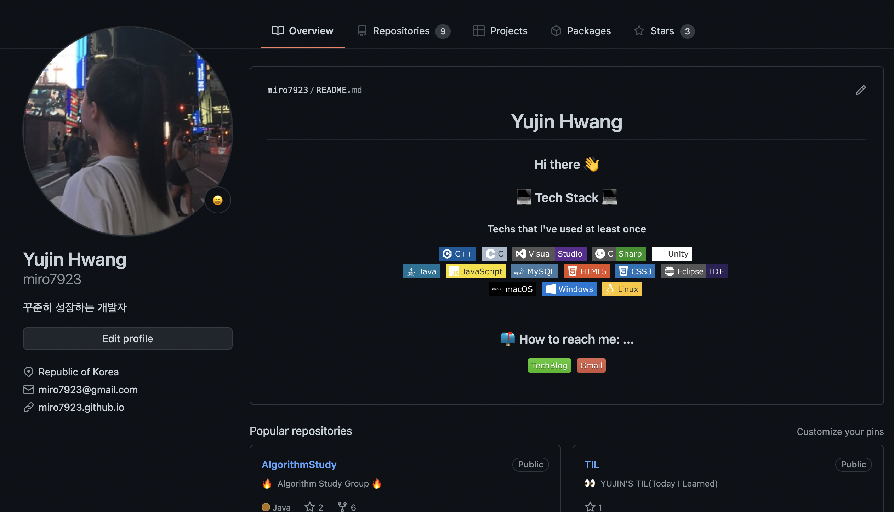
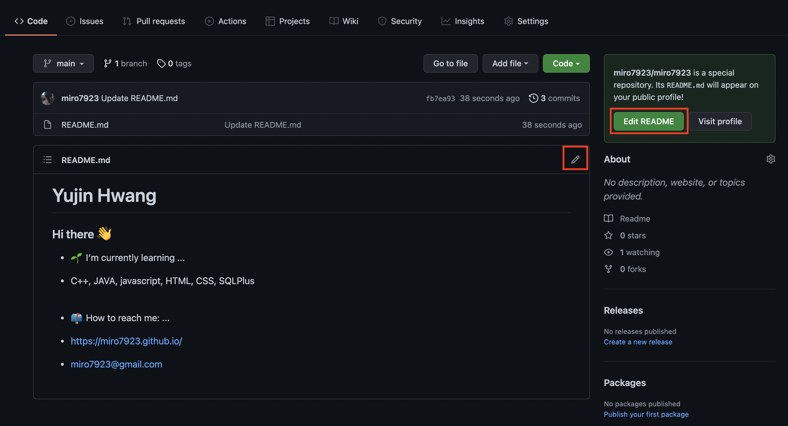
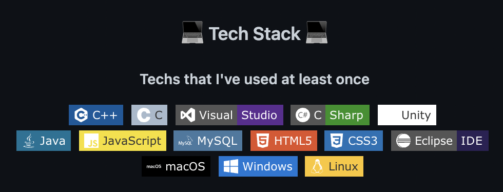
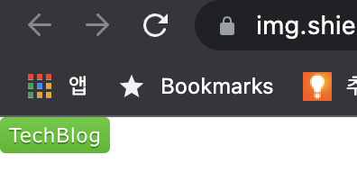
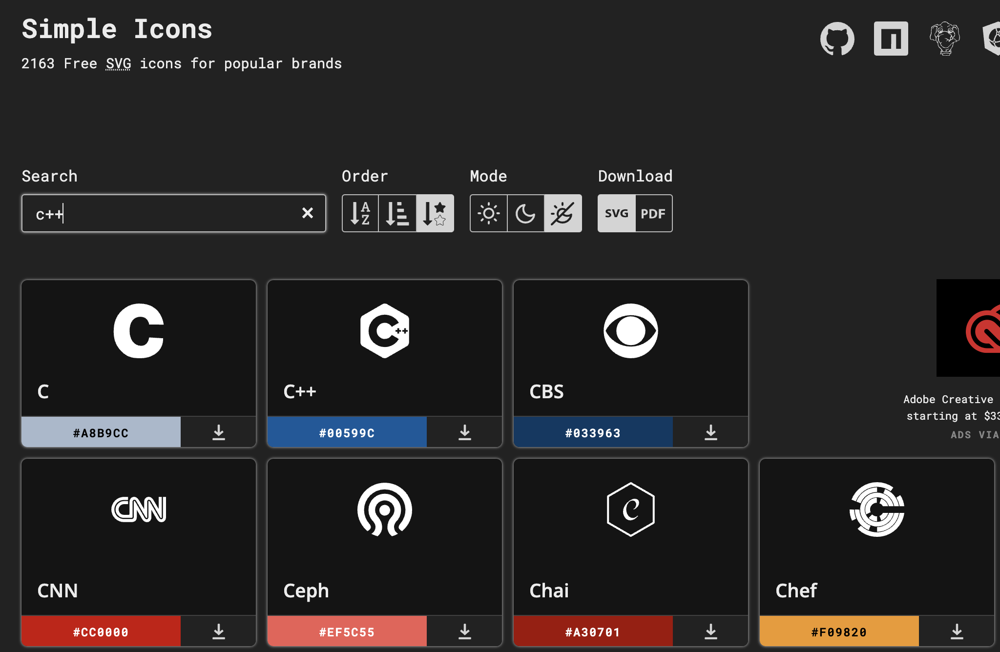

깃허브 프로필(Github Profile) 꾸미기
🎬 시작
드디어 깃헙 블로그를 만들고… 다른 깃헙들을 구경하다 보니까 깃헙 메인 화면 자체를 예쁘게 꾸며놓으신 분들이 많더라고요!

이렇게요!
되게 좋아 보이잖아요?ㅎㅎㅎ 그래서 저도 꾸며보기로 했습니다.
1. New Repository 만들기

먼저 내 아이디와 같은 이름으로 새로운 레포지토리를 만들어 줍니다.
처음 깃헙 블로그를 만들 때 봤을 때엔 깃헙 프로필 페이지 자체를 꾸밀 수 있다는 것을 몰라서 뭔 소린가 했는데 이런 뜻이었네요…

만들 때엔 add a readme에 꼭 체크해 주세요! readme로 프로필 페이지를 꾸며야 하거든요.
2. README.md 편집하기

새로 만든 레포로 들어오면 아무것도 없어서 휑한 모습을 볼 수 있습니다. 전 까먹고 스샷을 좀 늦게 찍었더니 어느정도 꾸미기를 진행한 상태였네요 😅
여기서 리드미 파일 상단의 연필 그림을 누르거나 오른쪽에 보이는 초록색 edit readme 버튼을 눌러서 웹상에서 바로 편집을 진행하셔도 되고 로컬로 다운받아서 편집한 다음에 푸시하셔도 됩니다.
🔸 markdown 미리보기
혹은 https://dillinger.io/

라는 사이트가 있는데 여기에서는 마크다운으로 작성하는 파일을 실시간으로 미리볼 수 있는 서비스를 제공하고 있습니다.
보통 마크다운 파일을 편집할 땐 미리보기가 가능하지 않으니까 여러번 커밋과 푸시를 하게 되어서 좀 귀찮은데 이 사이트에서는 실시간으로 확인하면서 작성한 다음에 복붙해서 한 번에 커밋할 수 있어서 꽤 편합니다.
하지만 전 쓸 게 그렇게 많지는 않아서 여기 쓰려다가 안 쓰고 그냥 레포에서 바로 수정했습니다…😅
🔸 배지 만들기

다른 분들 보니까 이런식으로 c++같은 프로그래밍 언어들을 그냥 텍스트로 쓰지 않고 배지 그림으로 달아 놓으셨더라고요. 저도 좋아보이는 건 다 해보고 싶어서 배지 이미지를 만들어 주는 사이트에서 만들었습니다.
▪️ 배지 : https://shields.io/
▪️ 언어 로고 : https://simpleicons.org/
위 사이트들에 가면 저런 폼나는 아이콘들을 얻을 수 있습니다.
배지를 만드시려면

이런식으로 넣고 싶은 문구를 입력하고 세번째 칸의 화살표를 눌러서 색상을 선택하거나 직접 입력하시고 나서 오른쪽의 Make Badge 버튼을 누르시면

이렇게 배지를 만들어 줍니다. 여기서 주소를 복사하세요.
<img src="https://img.shields.io/badge/-TechBlog-brightgreen">
위 태그를 리드미에 입력하시면 우리가 만든 배지를 불러옵니다. 하지만 이렇게만 작성하면 단순히 그림만 불러오고 이 그림을 눌렀을 때 어디로 이동할지는 정해주지 않았기 때문에 그냥 새 창에서 그림이 호출될 것이어요…
<a href="https://miro7923.github.io/">
<img src="https://img.shields.io/badge/-TechBlog-brightgreen">
그렇기 때문에 이런식으로 a 태그를 이용해 하이퍼링크를 걸어주시면 우리가 만든 배지 그림을 눌렀을 때 나의 블로그로 이동하게 됩니다.
일반화한다면
<img src="https://img.shields.io/badge/라벨-메세지-색상">
이렇게 작성하시면 됩니다.
만약 이메일 주소도 추가하고 싶으시면
<a href="mailto:miro7923@gmail.com">
mailto를 이용해 메일주소를 적어주세요!
🔸 프로그래밍 언어 로고 만들기
<img src="https://img.shields.io/badge/C++-00599C?style=flat-square&logo=C%2B%2B&logoColor=white"/></a> 
프로그래밍 언어 로고는 위와 같이 태그를 입력하면 되는데 이것을 일반화하면
<img src="https://img.shields.io/badge/언어-색상?style=flat-square&logo=simpleicons에서 로고 이름&logoColor=white"/></a> 
위와 같은 형태로 만들 수 있습니다.

simpleicons 사이트에서 원하는 언어를 검색해서 그 언어의 이름과 색상을 넣어준 다음 simpleicons 사이트에서 표시되어 있는 언어의 이름을 넣어주시면 됩니다.
단, c++을 쓸 때에만 좀 주의하면 되는데 simpleicons 사이트에는 단순히 C++이라 나와있지만 이걸 그대로 쓰면 적용이 안 되고 C%2B%2B라고 적어주어야 적용이 된다고 합니다. %2B가 +에 대응된다고 합니다.
c#은 C Sharp 이라는 이름으로 등록되어 있었습니다.

대략 이렇게 태그들을 쓴 다음에

커밋 버튼 눌러서 마무리!
3. 최종 완성

짠 👏 커밋 버튼을 눌러서 나오면 이렇게 완성된 리드미를 볼 수 있습니다.
그리고 제 깃헙 프로필 메인 페이지를 확인해보면 이렇게 있어보이게 바꼈습니다! 😄 뿌듯~~!!
이렇게 보니까 할 줄 아는거 되게 많네요! ㅎㅎ 더 뿌듯하다…
앞으로 공부 더 열심히 해야겠습니다. 그럼 다음 글에서 만나요! 👋